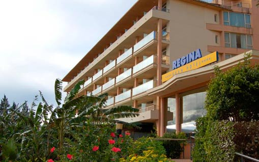

Quienes somos

Ubicado a orillas del río Cañete, en el Anexo de Condoray, distrito de Lunahuaná y a sólo 300 metros del pueblo, Regina Hotel fue creado por el gran fundador del turismo en Lunahuana, el Señor Isidoro Castro Capurro, a quien le encantaba viajar y fue en unos de sus viajes a Hawaii que estando sentado en la terraza del hotel en la isla de waikiki, pensó: "... así haré las habitaciones del Regina Hotel..."
Contará con amplias terrazas y habitaciones, todas con vista a la piscina, con la idea de satisfacer al turísta que busca descanso, quien busca admirar la naturaleza, gozar del buen clima con sol todo el año, gozar de un buen Pisco o quizás amante de un buen vino.
El nacimiento del turismo se inició en los años setenta, con la construcción del primer hotel (Embassy). Su impulsor fue Isidoro Castro Capurro (a quien le decian Lucho), dueño del hotel y alcalde de la localidad. Entre fines de los setenta e inicios de los ochenta, se instaló, poco a poco, la luz eléctrica y fue recién, en los noventa, que todo el distrito gozó no solo de luz sino de una carretera asfaltada.